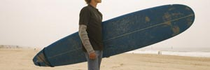

Matteo is an Italian student on exchange in Australia. He is writing a blog about his experiences and observations.
| Che idea intelligente! It really helps you get a better insight
into the culture and way of life of a new country! If you have the opportunity to go to Italy on exchange, it is a really good idea to keep a journal, blog or some other form of your choice to write about your observations and experiences. |
| I ragazzi australiani sono veramente sportivi!
Ho notato che per i giovani australiani il modo preferito per mantenersi in forma è fare sport. Qui impazziscono per lo sport!! Sono veramente sportivi!!! Sono meravigliato da quanti sport diversi ci sono!! Gli sport preferiti sono football (si gioca solo qui in Australia), calcio, hockey, basket, netball (non c’è in Italia – è uno sport simile a basket ma è solo per le ragazze) e tennis. Ai giovani piace anche andare in palestra. © 2007 JupiterImages Corporation Quando fa bel tempo (che è quasi sempre – sono molto fortunati; hanno un clima favoloso! è possibile stare all’aria aperta quasi tutto l’anno), gli piace nuotare in piscina o alla spiaggia. © 2007 JupiterImages Corporation Il surf è molto in voga per i ragazzi!! Purtroppo, da noi le onde quasi non esistono. Ovviamente non sono grandi abbastanza per fare surf!!!! Fanno anche altre attività fisiche tipo yoga, ballo, aerobica, jogging o una passeggiata lungo la spiaggia o nel parco. Almeno due volte durante la settimana fanno qualche forma d’attività fisica. Il fine settimana, molti sono impegnati con lo sport! Ogni tanto alcuni vanno a scuola in bici o a piedi. Questo non è molto comune e nemmeno pratico perché le distanze tra casa e scuola sono abbastanza grandi! Ho l’impressione che a tutti piace l’idea di mantenersi in forma (o almeno a quelli che ho conosciuto io!!!). È più facile qui in Australia, perché ci sono molte più opportunità e varietà di scelta. Invece in Italia, noi ragazzi abbiamo meno scelte, meno spazi, meno sport!! A scuola oltre la palestra non c’è altro! |
Matteo's blog |
Go to worksheet B1.6 to complete some writing exercises.